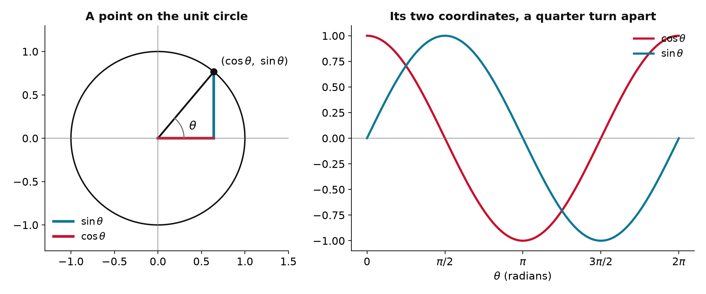
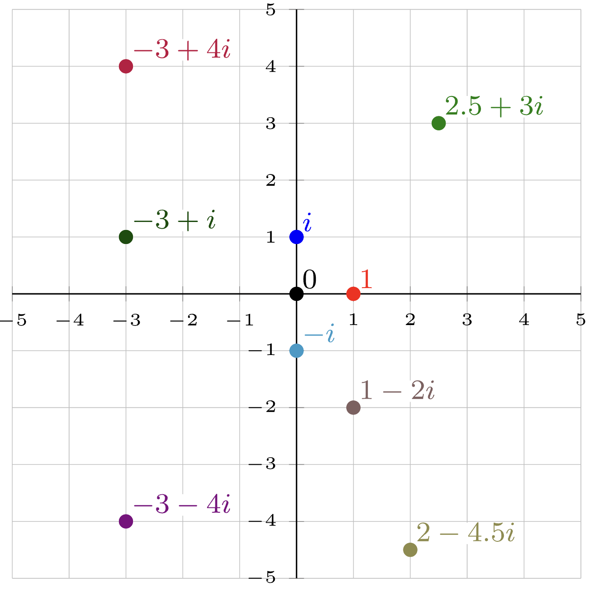
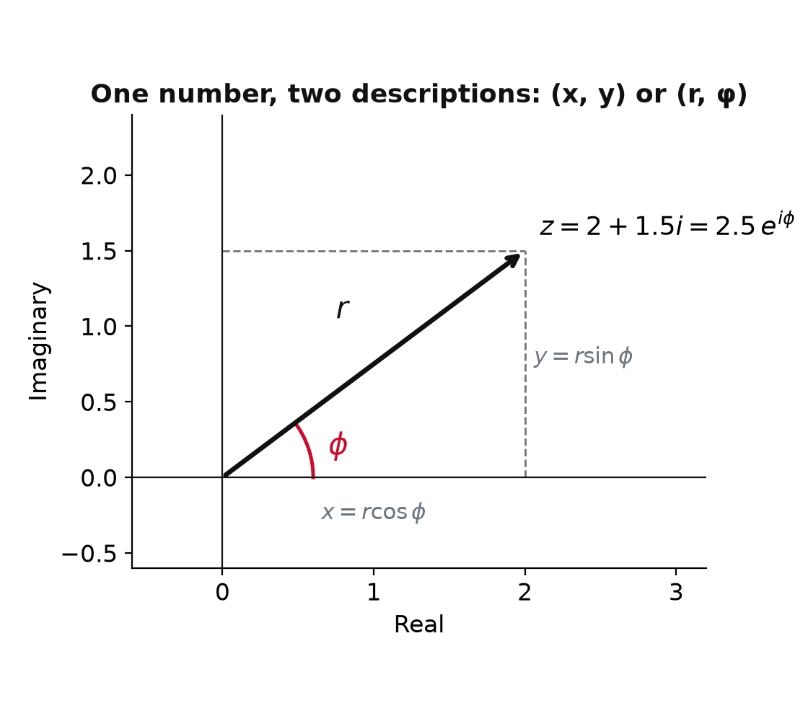
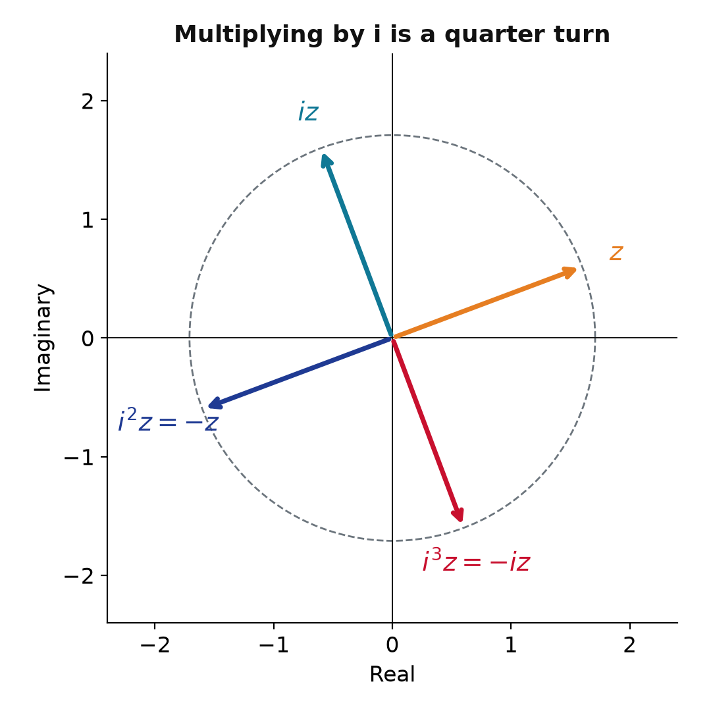
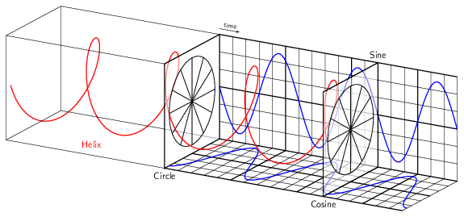

Chem 3240 · Appendix A.2

\[\cos^2\theta + \sin^2\theta = 1\]

\[z = x + iy, \qquad x = \operatorname{Re} z,\ \ y = \operatorname{Im} z\]

\[e^{i\phi} = \cos\phi + i\sin\phi\]

\[(r_1 e^{i\phi_1})(r_2 e^{i\phi_2}) = r_1 r_2\, e^{i(\phi_1 + \phi_2)}\]
\(z\) and \(e^{i\phi} z\): the length never changes, only the angle
{
const z = {re: 1.3, im: 0.5};
const w = {re: Math.cos(phi) * z.re - Math.sin(phi) * z.im, im: Math.sin(phi) * z.re + Math.cos(phi) * z.im};
const R = Math.hypot(z.re, z.im);
const circle = d3.range(0, 6.3, 0.05).map(t => ({x: R * Math.cos(t), y: R * Math.sin(t)}));
const a0 = Math.atan2(z.im, z.re);
const arc = d3.range(0, 1.0001, 0.02).map(s => ({x: 0.5 * Math.cos(a0 + s * phi), y: 0.5 * Math.sin(a0 + s * phi)}));
return Plot.plot({
width: 440, height: 440, aspectRatio: 1,
x: {domain: [-2, 2], label: "Real", ticks: 5}, y: {domain: [-2, 2], label: "Imaginary", ticks: 5},
marks: [
Plot.line(circle, {x: "x", y: "y", stroke: "#bbb", strokeDasharray: "4,4"}),
Plot.ruleX([0], {stroke: "#333"}), Plot.ruleY([0], {stroke: "#333"}),
Plot.arrow([{x1: 0, y1: 0, x2: z.re, y2: z.im}], {x1: "x1", y1: "y1", x2: "x2", y2: "y2", stroke: "#e67e22", strokeWidth: 3}),
Plot.arrow([{x1: 0, y1: 0, x2: w.re, y2: w.im}], {x1: "x1", y1: "y1", x2: "x2", y2: "y2", stroke: "#107895", strokeWidth: 3}),
Plot.line(arc, {x: "x", y: "y", stroke: "#C8102E", strokeWidth: 2}),
Plot.text([{x: z.re + 0.15, y: z.im + 0.1, t: "z"}], {x: "x", y: "y", text: "t", fill: "#e67e22", fontSize: 18}),
Plot.text([{x: w.re + 0.15, y: w.im + 0.1, t: "e^(iφ) z"}], {x: "x", y: "y", text: "t", fill: "#107895", fontSize: 18})
]
});
}
\[\bar{z} = x - iy = r\,e^{-i\phi}, \qquad |z|^2 = \bar{z}\,z = x^2 + y^2 = r^2\]
\(e^{i\phi} = \cos\phi + i\sin\phi\) turns trigonometry into exponentials: multiplying by \(e^{i\phi}\) rotates without stretching, \(\bar z z = |z|^2\) turns amplitudes into probabilities, and every identity you need falls out of one exponential rule.
Chem 3240 · Quantum Mechanics